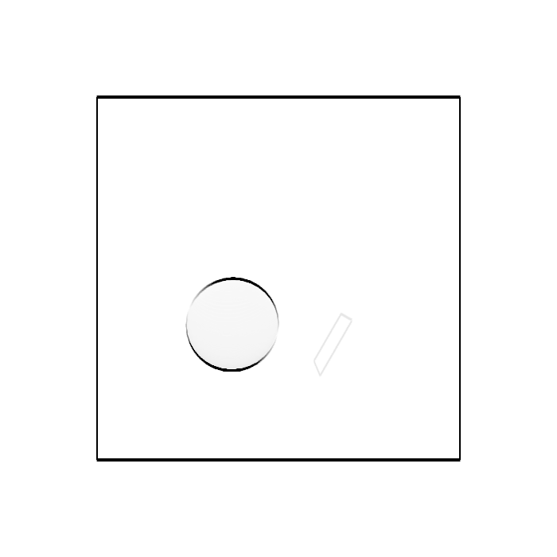
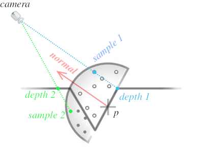

游戏 Shader 开发
Table of Contents
这篇文章主要是收集一些 3D 游戏开发中常用到的 Shader 技术的实现.
总得来说是一篇应用类的文章, 这些应用使用了很多"基础理论", 可以从以下文章找到:
-
要求掌握线性代数, 学习对于坐标点的常用变换.
-
要求掌握线性代数, 学习
3D成像流程中需要了解的坐标系. -
了解
3D成像的总体流程以及Shader在哪些阶段中运行, 如何进行基础的Shader编程.通过
WebGL API了解贴图,FBO等概念, 以及如何在Shader中使用它们.以及介绍了如何快速上手
Three.js框架. -
要求掌握微积分和概率论, 学习
3D世界是如何实现光照系统.这篇文章会少量使用到贴图和
FBO这两个工具, 所以前一篇文章一定要看. -
要求掌握微积分和概率论, 学习
Shader编程中一些常用的知识点,比如如何实现随机函数, 如何检查图像边缘, 如何实现噪声等等, 另外的成像算法
RayMarching.有很多人说
ShaderToy的代码对游戏开发没有帮助, 其实是不对的, 前面这些举例在实际开发中很常见.
这些文章是按照知识点之间的依赖关系罗列好的, 如果是初学的话请务必按照顺序进行阅读.
本人最初学习图形学就是为了游戏的 Shader 编程, 因此本文在定位上可以说是 Shader 开发的最终章,
后续会不断记录游戏开发中的 Shader 技术, 这里选择 three.js 作为实践平台.
原因如下:
JavaScript比起C++这样的编程语言更容易上手
- 运行环境容易搭建, 只要有个现代浏览器即可
相对于游戏引擎,
three.js的封装程度更低three.js缺少游戏引擎的一些高级特性, 要求开发者自行实现, 对于学习而言是有益的,以后切换到其它引擎上也是没问题的; 其次, 互联网上关于
three.js的资料十分充足,一定程度上可以弥补文档上的不足.
1. 描边 (Outlining)
描边的实现有很多种方式, 但这些方式在思路上是一样的:
通过判断片元 \(p\) 与它周围片元在某个属性上否连续, 以此断定 \(p\) 是否处于轮廓边上;
如果在属性上不连续, 就说明 \(p\) 在物体的轮廓边上, \(p\) 就是需要描边的片元.
在图像处理中, 判断两个相邻片元是否在属性上连续, 等同于判断属性之间的变化是否平滑, 相当于求关于属性的导数.
在数学上的定义完全相反, 是导数存在才能说连续, 但上面的说法有的确如此,
根据一阶导数的定义，可得出导数的估算方式为: \(f^{'}(x) \approx \frac{f(x + h) - f(x)}{h}\),
相邻片元意味着 \(h = 1\), 所以 \(f^{'}(x) \approx = f(x + h) - f(x)\),
根据连续的定义, 当 \(f(x + h) - f(x)\) 足够小时, \(f\) 在 \(x\) 上连续, 同理两个片元在某个属性上连续,
至于多少为足够小, 取决于开发者的定义了. 比较的属性一般为片元的深度值(depth)或法线(normal),
深度值用于找出物体的外轮廓, 法线则是用于找出物体的内轮廓, 也可以结合是在一起, 得出完全的轮廓图.
Figure 1: 图片来源于 How to render outlines in WebGL
3D Game Shaders For Beginners - Outlining 的实现方式则是如下:
通过计算相邻片元的 \(y\) 分量差 (该项目的 \(y\) 分量相当于平时的 \(z\) 分量), 找出最大的分量差,
如果最大分量差大于一定程度, 就说明该当前片元处于轮廓边上.
另外常见的方法是使用图像处理领域的 Sobel核 来找出轮廓线, 原理是计算当前片元在各个方向上的导数,
并与当前片元以及其周围片元进行模式匹配, 相似程度越高, 那么当前片元就会被加强亮度, 反之变暗.
两种方法在原理上其实差不多. 由于灰阶(gray scale)图更能突显物体的轮廓, 因此为了提高连续性判断的准确性,
通常会先生成场景的灰阶图, 再从灰阶图提取轮廓线.
这就是为什么会选择深度值做连续性判断, 因为深度贴图本身就是一张灰阶图; 法线贴图虽不是灰阶图, 但可以根据法线向量计算出某种灰阶值,
由于连续的法线向量是相似的, 所以它们的灰阶值也是相似的, 同样可以很好地突显出轮廓线.
在得到灰阶图后, 使用 Sobel 核分别从它们中提取出外轮廓线和内轮廓线, 最后把两者合并即可得出完整的轮廓线.

Figure 2: 正面轮廓

Figure 3: 几乎垂直的俯视轮廓

Figure 4: 增强后深度值后的俯视轮廓
2. Screen Space Ambient Occlusion, SSAO
未完成
2.1. 把视点空间的顶点储存在贴图中
以视点空间的顶点坐标 \(z\) 分量作为深度.
生成顶点贴图的 Shader 如下:
Position.vert
#version 130 attribute vec3 aPos; varying vec4 vPosInViewSpace; uniform mat4 modelMatrix; uniform mat4 viewMatrix; void main() { vPosInViewSpace = viewMatrix * modelMatrix * vec4(aPos, 1.0); }
Position.frag
#version 130 varying vec4 vPosInViewSpace; void main() { gl_FragColor = vPosInViewSpace; }
生成视点空间上顶点坐标的贴图, 用在后续的 uViewPositionTex.
2.2. 把视点空间的法线储存在贴图中
把视点空间的法线储存到贴图上, 用于后续构建出视点空间的 TBN.
以下是生成法线贴图的 Shader 程序.
Normal.vert
#version 130 attribute vec2 aCoord; attribute vec3 aNormal; attribute vec3 aTangent; attribute vec3 aBitangent; varying vec2 vCoord; varying vec3 vNormal; varying vec3 vTangent; varying vec3 vBitangent; uniform mat4 modelMatrix; uniform mat4 viewMatrix; void main() { vNormal = normalize((viewMatrix * modelMatrix * vec4(aNormal, 0.0)).xyz); vTangent = normalize((viewMatrix * modelMatrix * vec4(aTangent, 0.0)).xyz); vBitangent = normalize((viewMatrix * modelMatrix * vec4(aBitangent, 0.0)).xyz); vCoord = aCoord; }
Normal.frag
#version 130 varying vec2 vCoord; varying vec3 vNormal; varying vec3 vTangent; varying vec3 vBitangent; uniform int useNormalTex; uniform sampler2D uNormalTex; void main() { vec3 normal; if (useNormalTex == 1) { vec3 normalInTangentSpace = texture2D(uNormalTex, vCoord) * 2.0 - 1.0; mat3 tbn = mat3(vTangent, vBitangent, vNormal); normal = normalize(tbn * normalInTangentSpace); } else { normal = normalize(vNormal); } gl_FragColor = vec4(normal, 1.0) * 0.5 + 0.5; }
生成视点空间上法线的贴图, 用在后续的 uViewNormalTex.
2.3. SSAO
SSAO 的关键点在于如何判断一个片元是否被遮蔽, 以下是它的原理解释.

在视点空间上, 以当前片元 \(p\) 为原点构建出面向其法线 normal 的单位半球体, 在球体内进行随机采样,
得到一个采样点集合 \(S\). 这里以其中两个采样点 sample 1 和 sample 2 作为后续的研究例子.
首先在切线空间 (tangent space) 上进行采样, 把采样点变换到裁剪空间 (clip space) 上,
再从裁剪坐标变换到 NDC, 最后把 NDC 坐标变换到屏幕空间 (screen space) 上得到屏幕坐标.
根据屏幕坐标从顶点贴图 uViewPositionTex 获取实际成像的顶点坐标, 该顶点坐标的 \(z\) 分量就是实际成像的深度值 depth.
比如, 根据屏幕坐标从顶点贴图上获得 sample 1 的深度 depth 1 以及 sample 2 的深度 depth 2.
如图所示, 当深度值 depth 比其采样点 \(s \in S\) 的 \(z\) 分量小, 那就说明 \(p\) 点在 \(\vec{ps} = s - p\) 方向上被遮蔽;
所以 sample 2 被遮蔽, sample 1 没有被遮蔽.
那么如何计算 \(p\) 点的被遮蔽程度呢? 计算方法有很多种, 这里假设 \(p\) 点的被遮蔽程度的范围为 \([0, 1]\),
当采样点 \(s \in S\) 被遮蔽时, 以 \(o(r) = smoothstep(0.0, 1.0, \frac{r}{|z - \mathrm{depth}|})\) 作为 \(s\) 的被遮蔽程度,
其中 \(z\) 是 \(s\) 的 \(z\) 分量, \(\mathrm{depth}\) 是根据 \(s\) 在 uViewPositionTex 上获得的深度值, \(r\) 是半球体的半径.
以此方法计算出 \(S\) 中所有采样点的被遮蔽程度, 并以它们平均值作为 \(p\) 点的被遮蔽程度:
\(\frac{1}{n} \sum \limits_{i=0}^{n-1} o_{i}(r) = \frac{1}{n} \sum \limits_{i=0}^{n-1} smoothstep(0.0, 1.0, \frac{r}{|z_{i} - \mathrm{depth}_{i}|})\).
想要遮蔽效果准确, 需要采样点有足够多的数量和合适的分布, 当然采样点数量越多, 性能也越差.
如果采样点数量过少, 遮蔽效果的精确度会下降, 生成的 SSAO 贴图会出现带状条纹(banding)的效果,

为了消除带状条纹效果, 可以让 \(p\) 的采样点集合 \(S\) (\(s \in S\)) 围绕法线进行统一的旋转, 不同的采样点集合的旋转是不一样的,
比如 \(p_i\) 和 \(p_j\) 的采样点集合分别为 \(S_i\) 和 \(S_j\), 它们的旋转矩阵分别是 \(M_{i}\) 和 \(M_{j}\), 其中 \(i \ne j\).
这样确实会获得更好的效果, 但也会引入一些噪点图案(noise pattern), 解决方法就是对结果模糊, 弱化噪点效果.
在分布方面, 我们希望随着采样点索引的增加, 新增采样点与原点之间距离增加,
使得新采样点之间越分散, 最早的采样点在原点附近聚集,
如下图的关系:

这个图的函数是 \(mix(0.1, 1.0, x) = 0.1 \times (1 - x) + x\), \(x = i^2 \in (0, 1]\),
其中 \(i\) 是采样点索引 \(I\) 与采样点数量 \(N\) 之比: \(\frac{I}{N} \in (0, 1]\).
因为采样点是 TBN 坐标, 所以只要能为不同 \(p\) 点生产随机的 TBN 矩阵就可以实现围绕法线进行统一的随机旋转.
最简单的做法就是根据 \(p\) 的信息生成一个随机变量 \(R\) 来作为校准前 TBN 坐标的 tangent 分量, 再根据 \(R\) 和 \(N\) 计算出 TBN 矩阵.
最终生成的实际是开放(openness)贴图, 而不是遮蔽(occlusion)贴图,
因为计算一个片元被遮蔽后的颜色是 \(c \times \mathrm{openness}\), 其中 \(c\) 是片元的颜色,
如果是遮蔽贴图, 那么就算方式变成 \(c \times (1.0 - \mathrm{occlusion})\), 生成开放贴图是为了方便后续运算.
SSAO.frag
#version 130 #define NUM_SAMPLES 8 #define NUM_NOISE 4 uniform vec2 u_resolution; uniform sampler2D uViewNormalTex; uniform sampler2D uViewPositionTex; uniform mat4 uProjectionMatrix; float hash11 ( uint n ) { // integer hash copied from Hugo Elias n = (n << 13U) ^ n; n = n * (n * n * 15731U + 789221U) + 1376312589U; return float( n & uint(0x7fffffffU) ) / float(0x7fffffff); } vec3 hash13( uint n ) { // integer hash copied from Hugo Elias n = (n << 13U) ^ n; n = n * (n * n * 15731U + 789221U) + 1376312589U; uvec3 k = n * uvec3(n, n*16807U, n*48271U); return vec3( k & uvec3(0x7fffffffU) ) / float(0x7fffffff); } vec3 getSamplePoint( uint i ) { float scale = float(i) / float(NUM_SAMPLES); scale = mix(0.1, 1.0, scale * scale); vec3 r = hash13(i); r.x = r.x * 2.0 - 1.0; r.y = r.y * 2.0 - 1.0; return normalize(r) * scale; } vec3 getNoise( uint n ) { vec3 r = vec3(hash11(n * 17) * 2.0 - 1.0, hash11(n * 289) * 2.0 - 1.0, 0.0); return normalize(r); } void main() { float radius = 0.6; float bias = 0.01; vec2 uv = gl_FragCoord.xy / u_resolution.xy; vec3 origin = (texture2D(uViewPositionTex, uv)).xyz; vec3 normal = (texture2D(uViewNormalTex, uv) * 2.0 - 1.0).xyz; int noiseS = int(sqrt(NUM_NOISE)); int noiseX = int(gl_FragCoord.x - 0.5) % noiseS; int noiseY = int(gl_FragCoord.y - 0.5) % noiseS; vec3 rvec = getNoise(noiseX + (noiseY * noiseS)); vec3 tangent = normalize(rvec - dot(rvec, normal) * normal); vec3 bitangent = cross(normal, tangent); mat3 tbn = mat3(tangent, bitangent, normal); float openness = NUM_SAMPLES; for (int i = 0; i < NUM_SAMPLES; i++) { // Transform the tangent space sampling points into world space vec3 dir = tbn * getSamplePoint(i); // Scale the sample points by radius of hemisphere (maybe not a unit hemisphere) in view space vec3 surfaceView = origin.xyz + dir * radius; // Clip Space vec4 surfaceClip = uProjectionMatrix * vec4(surfaceView, 1.0); // NDC vec3 surfaceNDC = surfaceClip.xyz / surfaceClip.w; // Screen Space vec2 surfaceUV = (surfaceNDC.xy * 0.5 + 0.5).xy; vec4 sampleDepth = texture2D(positionTexture, surfaceUV).z; float occluded = 0.0; if (surfaceView.z + bias <= sampleDepth) { occluded = 0.0; } else { occluded = 1.0; } openness -= occluded * smoothstep(0.0, 1.0, radius / abs(surfaceView.z - sampleDepth)); } openness /= NUM_SAMPLES; gl_FragColor = vec4(vec3(openness), origin.a); }
开放贴图用在后续的 uSSAOInTex.
2.4. 对噪点进行模糊
varying vec2 uniform sampler2D uSSAOInTex;